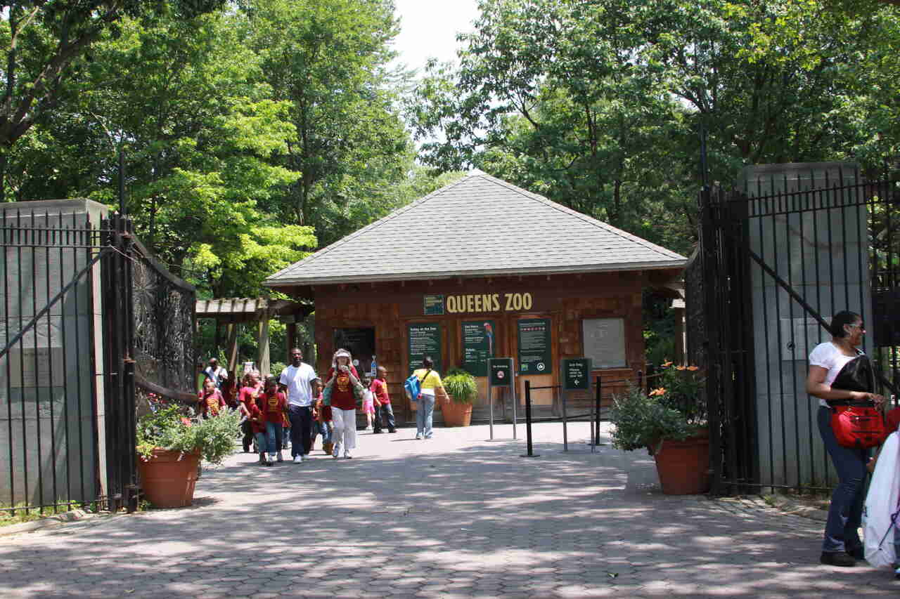
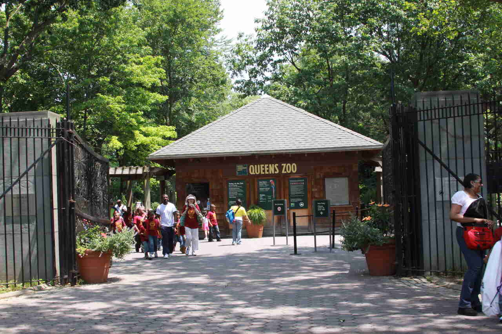

Welcome to Central Park! When it comes to having the perfect Park day, preparation is key—especially when there are 843 acres to explore. Whether you're a seasoned regular or a first-time visitor, familiarize yourself with the ins and outs of Central Park and find answers to some of the most frequently asked questions.
Conservation
NYC Parks is committed to creating a resilient and sustainable park system, with thriving ecosystems that support New Yorkers of all kinds, human and wildlife. We take a variety of actions in all five boroughs to preserve, restore, and enhance natural areas. Meet the trees and plants that grow in our forests and gardens, discover the animals that live in our urban jungle, uncover revealing histories all around us, and go behind the scenes to explore how we create, grow, and care for thriving green spaces.
The mission of the Office of Parks, Recreation and Historic Preservation is to provide safe and enjoyable recreational and interpretive opportunities for all New York State residents and visitors and to be responsible stewards of our valuable natural, historic and cultural resources.

 
